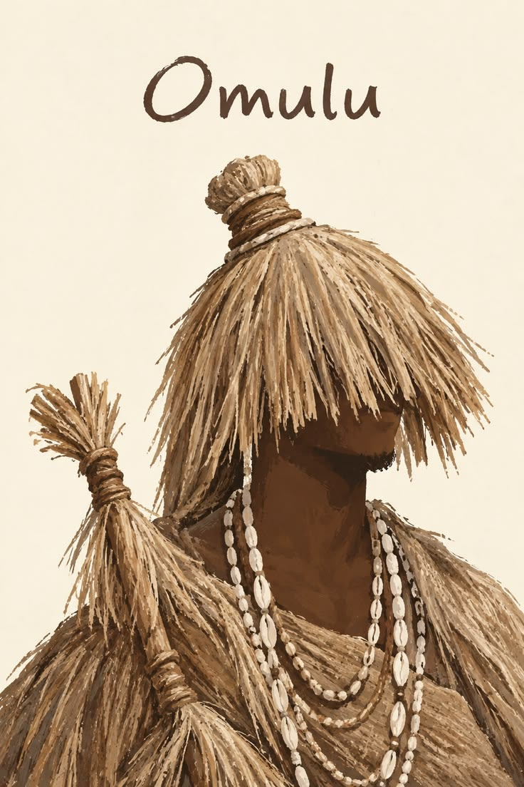
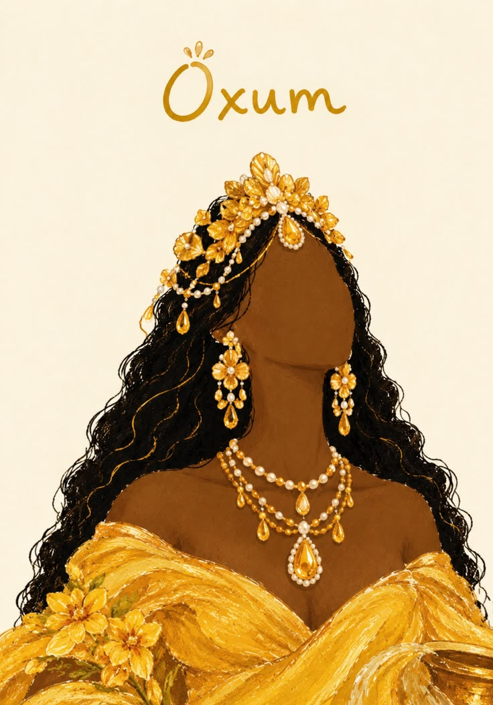
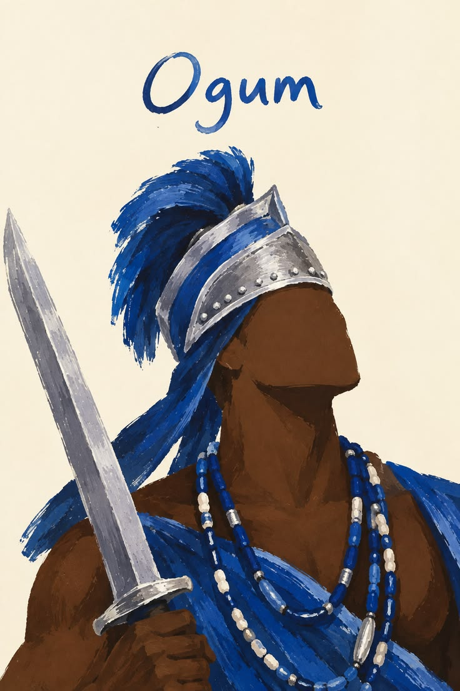

Agradecimentos



Agradeço, antes de tudo, a Jagun pela força, pela proteção, pelos ensinamentos e pela presença firme em cada passo desta caminhada. Sua força me sustenta, sua proteção me guarda, e sua sabedoria ilumina os caminhos que trilho.
Agradeço especialmente aos Pais de Santo Babá Júlio César e Babá Hércules Bispo, pelo acolhimento, pela orientação, pelos ensinamentos e pela contribuição inestimável à minha formação pessoal e religiosa. A cada gesto de cuidado, a cada palavra de sabedoria, a cada silêncio respeitoso, devo parte do que hoje sou.
Agradeço ao Ilê Axé Ogum Omo Oxum, espaço sagrado de encontro e aprendizado, onde a memória dos ancestrais permanece viva e onde a comunidade se fortalece.
Agradeço aos ancestrais, a todos os que vieram antes de nós e que abriram os caminhos com sua luta, sua fé e sua resistência. Sem eles, nada disso seria possível.
Agradeço a todos que, de alguma forma, contribuíram para essa trajetória com presença, com escuta, com ensinamentos, com axé.
A todos, minha sincera gratidão. Axé!